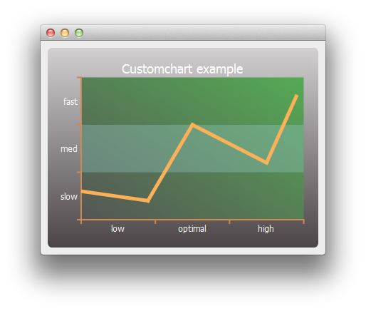

Customizing Charts
Note: This is part of the Charts with Widgets Gallery example.

We begin by creating a simple line series and a chart object.
auto series = new QLineSeries; *series << QPointF(0, 6) << QPointF(9, 4) << QPointF(15, 20) << QPointF(25, 12) << QPointF(29, 26); auto chart = new QChart; chart->legend()->hide(); chart->addSeries(series);
First we customize the series and the chart's title and background.
// Customize series QPen pen(QRgb(0xfdb157)); pen.setWidth(5); series->setPen(pen); // Customize chart title QFont font; font.setPixelSize(18); chart->setTitleFont(font); chart->setTitleBrush(QBrush(Qt::white)); chart->setTitle("Custom Chart"); // Customize chart background QLinearGradient backgroundGradient; backgroundGradient.setStart(QPointF(0, 0)); backgroundGradient.setFinalStop(QPointF(0, 1)); backgroundGradient.setColorAt(0.0, QRgb(0xd2d0d1)); backgroundGradient.setColorAt(1.0, QRgb(0x4c4547)); backgroundGradient.setCoordinateMode(QGradient::ObjectBoundingMode); chart->setBackgroundBrush(backgroundGradient); // Customize plot area background QLinearGradient plotAreaGradient; plotAreaGradient.setStart(QPointF(0, 1)); plotAreaGradient.setFinalStop(QPointF(1, 0)); plotAreaGradient.setColorAt(0.0, QRgb(0x555555)); plotAreaGradient.setColorAt(1.0, QRgb(0x55aa55)); plotAreaGradient.setCoordinateMode(QGradient::ObjectBoundingMode); chart->setPlotAreaBackgroundBrush(plotAreaGradient); chart->setPlotAreaBackgroundVisible(true);
Then we customize the axes.
auto axisX = new QCategoryAxis; auto axisY = new QCategoryAxis; // Customize axis label font QFont labelsFont; labelsFont.setPixelSize(12); axisX->setLabelsFont(labelsFont); axisY->setLabelsFont(labelsFont); // Customize axis colors QPen axisPen(QRgb(0xd18952)); axisPen.setWidth(2); axisX->setLinePen(axisPen); axisY->setLinePen(axisPen); // Customize axis label colors QBrush axisBrush(Qt::white); axisX->setLabelsBrush(axisBrush); axisY->setLabelsBrush(axisBrush); // Customize grid lines and shades axisX->setGridLineVisible(false); axisY->setGridLineVisible(false); axisY->setShadesPen(Qt::NoPen); axisY->setShadesBrush(QBrush(QColor(0x99, 0xcc, 0xcc, 0x55))); axisY->setShadesVisible(true);
Then the axis label values and ranges. Once the axes are ready, we set them to be used by the chart.
axisX->append("low", 10); axisX->append("optimal", 20); axisX->append("high", 30); axisX->setRange(0, 30); axisY->append("slow", 10); axisY->append("med", 20); axisY->append("fast", 30); axisY->setRange(0, 30); chart->addAxis(axisX, Qt::AlignBottom); chart->addAxis(axisY, Qt::AlignLeft); series->attachAxis(axisX); series->attachAxis(axisY);
Finally, we create a view containing the chart.
createDefaultChartView(chart);
Now we are ready to show the chart on a main window.